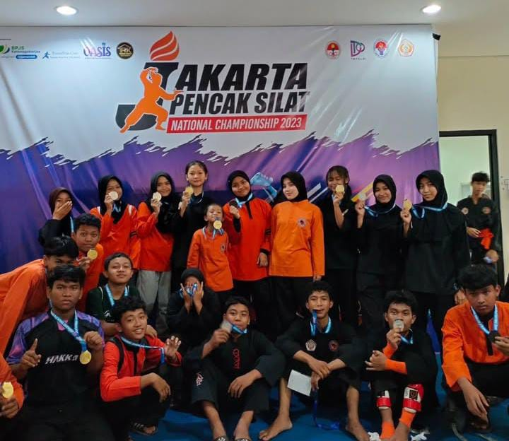
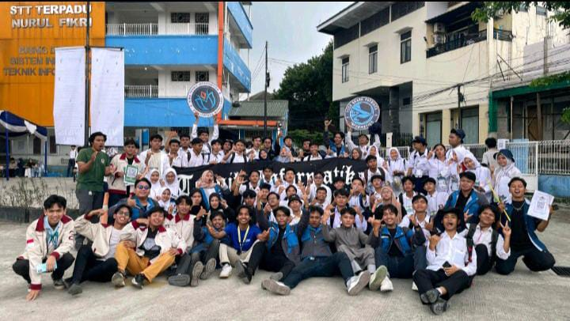
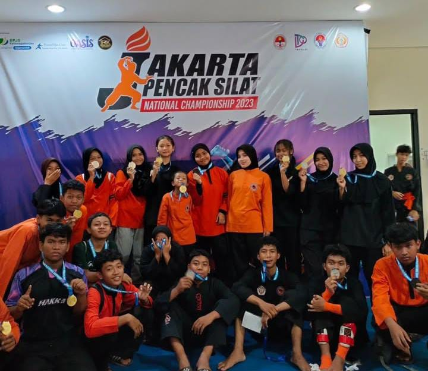
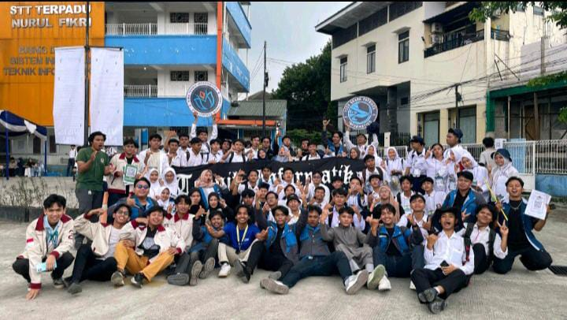

Sandi Kurniawan
Mahasiswa Teknik Informatika | Cyber Security Enthusiast | Pencak Silat Athlete
Tentang Saya
Halo! Saya Sandi Kurniawan, mahasiswa Teknik Informatika di STT-NF yang memiliki ketertarikan dalam bidang keamanan siber dan kecerdasan buatan. Saya juga aktif dalam olahraga bela diri, khususnya Pencak Silat, dan telah meraih beberapa prestasi tingkat nasional.

 


